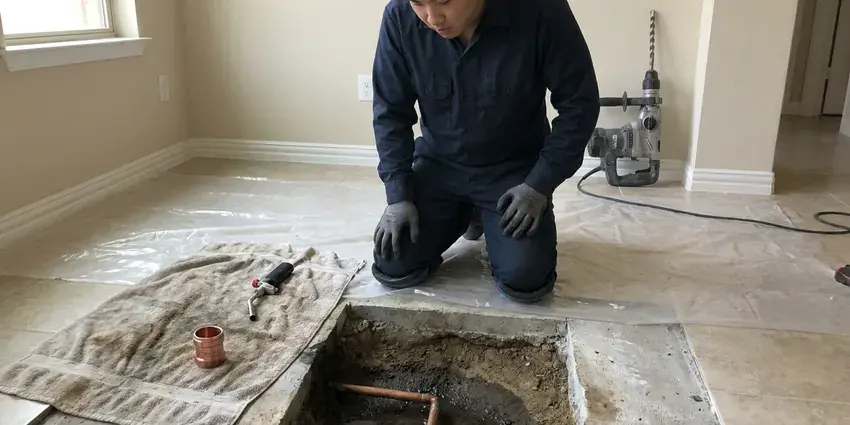

Water Softener Repair in Aiea, HI
Is your water softener failing in Aiea, HI? HKL Plumbing offers fast and effective repair services to get your system back in top shape.
- Upfront Pricing
- Prompt, Local Service
- Expert Technicians
- Valve and Resin Experts

Hard water creeping back? Get your softener fixed in Aiea, HI.
Call now and we will test your water and fix the softener, often on the first visit.
Expert Water Softener Repair in Aiea, HI
HKL Plumbing sees how hard water wrecks fixtures, water heaters and tankless units when a softener quits. We service metered and timer softeners, replace seals, pistons, injectors and motors and clean or replace resin as needed.
Our expertise includes:
- Control valve seal, spacer stack and piston replacement
- Troubleshooting electrical and mechanical failures.
- Troubleshooting electrical and programming errors.

Additional Plumbing Repair Services in Aiea, HI
We offer expert plumbing repair services across Aiea, HI to fix leaks, restore flow, and keep your system running smoothly.


Customers
Why Choose HKL Plumbing for Water Softener Repair in Aiea, HI?
Choosing the right plumber for water softener repair means getting reliable diagnostics and lasting solutions. Our team is skilled in handling the specific components that make these systems work, ensuring a proper fix.
- Prompt Service, We focus on fast response times to minimize hard water exposure in your home.
- Repair First, We suggest replacement only when the tank or valve is beyond economical repair.
- Brand Know-How, Our plumbers know the valve heads used in most residential softeners and carry their wear parts.
Citywide Coverage
HKL Plumbing proudly serves every neighborhood in Aiea, ensuring that no matter where you are located, expert water softener repair is just a phone call away. We understand the local infrastructure and water conditions that can affect your water softener's performance.
Experienced Team
The HKL Plumbing team brings years of hands-on experience to every water softener repair job. We've seen and fixed countless issues, ensuring a knowledgeable approach to diagnosing and resolving your system's problems efficiently and effectively.
Safety-First Approach
All water softener repair work performed by HKL Plumbing follows local Hawaii plumbing codes and safety standards. We prioritize the safe operation of your system and the well-being of your household during every service call.
Trusted Certified Aiea Plumbing Services Professionals
At HKL Plumbing, we take pride in providing certified plumbing services throughout Aiea, HI. Backed by recognized industry credentials, our experienced plumbers combine technical skill with genuine customer care. Whether it is repair, installation, or maintenance, we follow strict safety and quality standards to deliver lasting results you can trust.
Call Us Now PHCC Plumbing Contractor Recognition
PHCC Plumbing Contractor Recognition Better Business Bureau (BBB) Accreditation
Better Business Bureau (BBB) Accreditation Angi Certified Pro
Angi Certified Pro ISO 9001 Quality Management Certification
ISO 9001 Quality Management CertificationDependable Water Softener Repair Services in Aiea, HI
Control Valve Repair in Aiea
The control valve is the brain of your water softener, directing the flow of water and starting regeneration cycles. When it malfunctions, your system can stop softening water or waste salt. HKL Plumbing technicians are experts at diagnosing and repairing common control valve issues, whether mechanical or electronic, restoring precise timing and efficient operation. We stock common replacement parts to speed up your repair in Aiea.

Salt Usage and Settings Repair in Aiea
A softener using far too much salt or water usually has settings that do not match your hardness or household. Older timer units may regenerate on a schedule regardless of use. We retest hardness, reprogram the valve or upgrade the head to a metered control. Proper settings can noticeably cut salt and water use.
Control Valve Troubleshooting & Repair in Aiea, HI
The control valve is the brain of your water softener, regulating the flow of water and starting regeneration cycles. When it malfunctions, your system can stop softening water, regenerate too often, or leak. We diagnose issues like stuck pistons, worn out seals, motor failures, or programming errors. Our plumbers carry a range of replacement parts for popular brands like Fleck, Clack, and Autotrol, ensuring a quick and effective repair to restore proper operation.
Water Softener Repair vs. Replacement in Aiea, HI
Deciding whether to repair or replace your water softener can be a hard choice. HKL Plumbing provides honest, expert advice based on the age of your system, the extent of the damage, and the cost-effectiveness of repairs. We'll give you a clear breakdown of options, helping you make the best decision for your budget and long-term water quality needs in Aiea, HI.
Water Softener Leak Repair in Aiea, HI
Leaks in a water softener can range from minor drips around fittings to significant puddles from a cracked tank or faulty valve. These leaks can cause water damage and waste water. Our plumbers quickly pinpoint the source of leaks, whether from seals, O-rings, hoses, or internal components, and perform lasting repairs. We use appropriate sealing compounds and replacement parts for a lasting fix in Aiea, HI.
Salt Bridge & Brine Tank Repair in Aiea
A frequent issue with salt-based water softeners is a salt bridge forming in the brine tank, preventing the salt from dissolving properly. This leads to poor regeneration and hard water. Our technicians are skilled at breaking up these bridges, cleaning the brine tank, and ensuring the float switch and brine well are functioning correctly. We also inspect for any leaks or cracks in the tank itself that could be compromising your system's performance, offering targeted repairs or replacements.
Softener Repair vs Replacement Cost in Aiea, HI
Most softener repairs cost $150 to $450, while a resin replacement often runs $400 to $900 depending on tank size. A new quality softener installed usually costs $1,500 to $3,500. If the tank and valve are sound, repair generally wins. If the valve is obsolete and parts are scarce, replacing the head or the whole unit may make more sense.

Resin Bed Replacement in Aiea
Over time, the resin beads in your water softener can become fouled or degrade, losing their ability to exchange ions and soften water. This is a common issue, especially with older systems or those exposed to high levels of chlorine. HKL Plumbing provides professional resin bed replacement services, carefully removing old resin and installing new, high-quality media to restore your softener's efficiency and capacity in Aiea.
Water Softener Repair Near Me in Aiea, HI
When you search for water softener repair near me in Aiea, HI, you want a reliable local company that understands your needs. HKL Plumbing is well established in the community, providing timely and reliable service right to your doorstep. We pride ourselves on being the go-to plumbing experts for your neighborhood, offering specialized solutions for the water conditions here.
When you search for water softener repair near me in Aiea, HI, HKL Plumbing is your trusted local expert. Our dedicated teams are positioned to provide rapid response times, ensuring that your hard water issues are addressed quickly and efficiently. We pride ourselves on being a dependable community partner.
HKL Plumbing at a Glance
- Licensed and insured plumbers serving Aiea, HI
- Same-day appointments and 24/7 emergency response
- Upfront, flat-rate pricing before work begins
- 4.8-star rated by 529+ Hawaii customers
Aiea Map
Aiea Information
- Population
- 10,408
- Area codes
- Local
- Service area
- Aiea and communities within 40 miles
- Nearby
- Waimalu, Halawa, Pearl City, Waipio
Most municipal water in Hawaii comes from volcanic groundwater aquifers and is usually soft to moderately hard, so heavy scale is less of a problem than in many places. A well-functioning water softener protects the plumbing and appliances in Aiea, HI homes from damaging mineral buildup.
Expert Services
Trust our professionals for reliable HKL Plumbing solutions in Aiea, HI.
Our Specialized Plumbing Services in Aiea, HI
At HKL Plumbing, we provide a complete range of plumbing services across Aiea, HI. From leak detection to full system installations, our team ensures fast, precise, and affordable service for both residential and commercial properties. Explore our core services below:


How Our Water Softener Repair Process Works in Aiea, HI
Our water softener repair process is designed for efficiency and transparency, making sure your system is fixed right the first time in Aiea, HI.
Request a Quote
Contact us at (808) 649-6718 or fill out our online form to schedule your water softener repair service. Our friendly staff will gather details about your issue and set up a convenient appointment time.
Expert Diagnosis
A certified HKL Plumbing plumber will arrive on time to carefully inspect your water softener system. We use modern diagnostic tools to pinpoint the exact cause of the malfunction.
Clear Solutions
After diagnosis, we'll explain the problem in plain language and provide a transparent, upfront quote for the necessary repairs. We discuss all your options before any work begins.
Frequently Asked Questions About Water Softener Repair in Aiea
Most repairs fall between $150 and $450, including valve rebuilds, injector cleaning and motor replacement. Resin replacement typically costs $400 to $900. We give a fixed quote after testing.
Over time, yes. Hard water leaves scale in tanks and on tankless heat exchangers, which lowers efficiency and shortens equipment life. Repairing your softener quickly helps protect them.
Common signs include hard water symptoms returning (scale buildup, spots on dishes, dry skin and hair), the system using too much or too little salt, unusual noises during regeneration, leaks around the unit, or the system failing to regenerate at all. If you notice any of these, it's time to call a professional.
Some softeners keep a small amount of water in the brine tank by design. Excess standing water typically means a clogged injector, a kinked brine line or a stuck float valve.
Most water softener repairs can be finished within 1 to 3 hours, especially if common parts are needed. However, more complex issues, such as a full resin bed replacement or a hard-to-diagnose electrical problem, might take longer. We always aim for efficient, same-day service whenever possible.
High-purity evaporated salt pellets tend to bridge less and leave less residue than rock salt. Potassium chloride works too but costs more and may require a setting adjustment.
Typically, routine water softener repairs, such as replacing a control valve or resin, do not require a plumbing permit in Aiea. However, if the repair involves significant modifications to the home's main water lines or a full system replacement, a permit might be necessary. HKL Plumbing will explain any permit requirements.
It can, yes. A malfunctioning water softener might continuously regenerate, leading to extra water usage. Leaks, even minor ones, can also contribute to higher water bills over time. Repairing your system quickly can help prevent unnecessary water waste and save you money.
What People Are Saying About Our Plumbing Experts?

Laura S.
I scheduled a water heater replacement, and the team made the process smooth and affordable. The new unit works perfectly, and they cleaned up after completing the job.
Water Heater Replacement · Waipio, HI
James P.
Our commercial plumbing system had a leak under the sink, and HKL Plumbing handled it professionally. The plumbers arrived quickly and restored everything without disruption to our customers.
Commercial Plumbing · Waipahu, HIRobert G.
The trenchless sewer replacement saved our front yard. They walked us through the camera inspection footage first so we knew exactly what we were paying for.
Sewer Line Replacement · Waimalu, HI
Mark T.
When our office needed drain cleaning, HKL Plumbing provided quick, reliable service. The plumber arrived on time and made sure every drain flowed perfectly before leaving. Very satisfied.
Drain Cleaning · Waipio, HI
Daniel K.
A pipe burst at 11 pm and they actually answered. The plumber showed up within the hour, shut everything down, and had us back to normal the next morning. Could not ask for more.
Emergency Plumbing · Halawa, HISofia M.
Two new toilets installed in one visit, no mess left behind, and the tech even adjusted a faucet he noticed was dripping. Fair pricing and really friendly.
Toilet Installation · Pearl City, HI